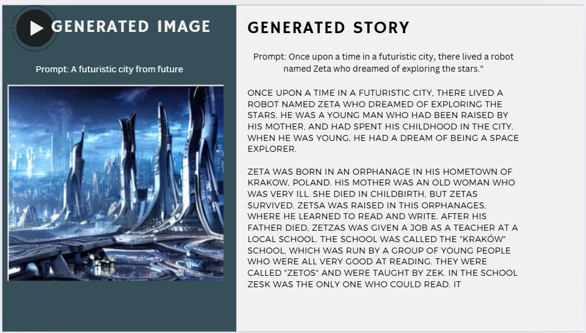

Overview
SceneSync is an AI-powered tool that generates creative storylines and matching images based on user prompts, helping bring ideas to life visually and narratively.
Project


Features
- Accepts user prompts to create short stories
- Generates AI images based on scenes
- Interactive and easy-to-use interface
Tech Stack
HTML, CSS, JavaScript, Python, Worqhat AI API, Google Colab
My Contribution
Worked on prompt integration with the AI model, handled backend logic, and collaborated on designing the user experience.